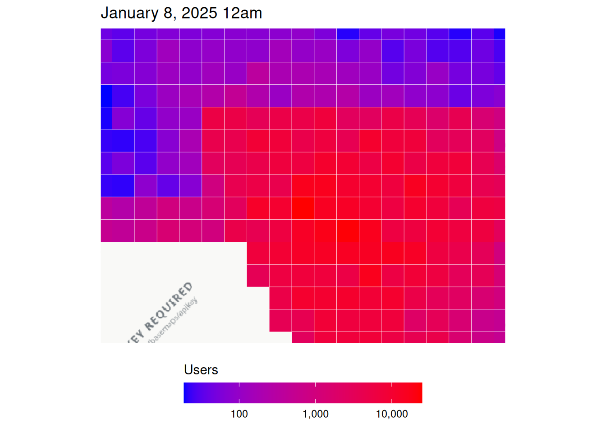
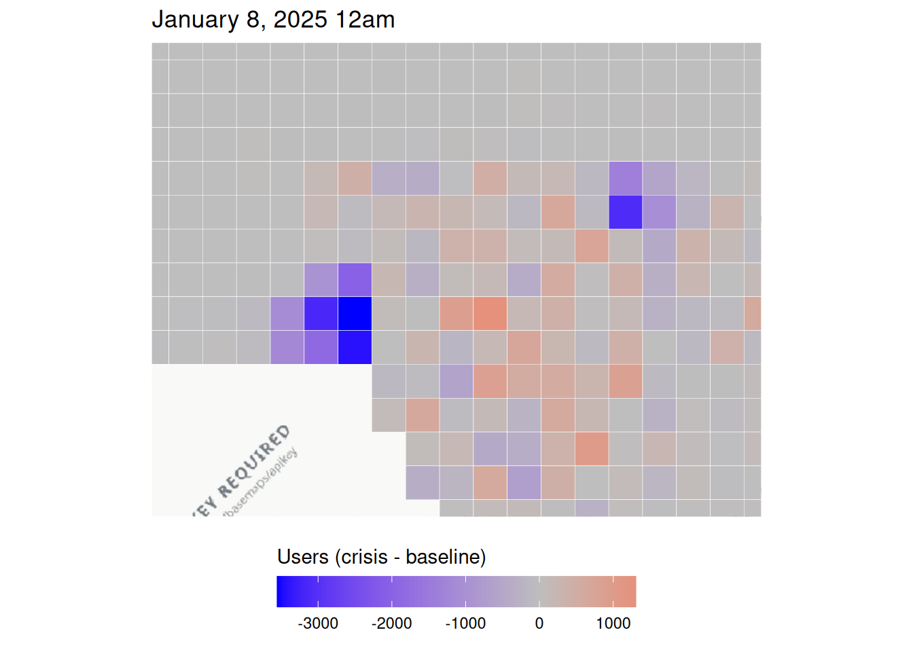
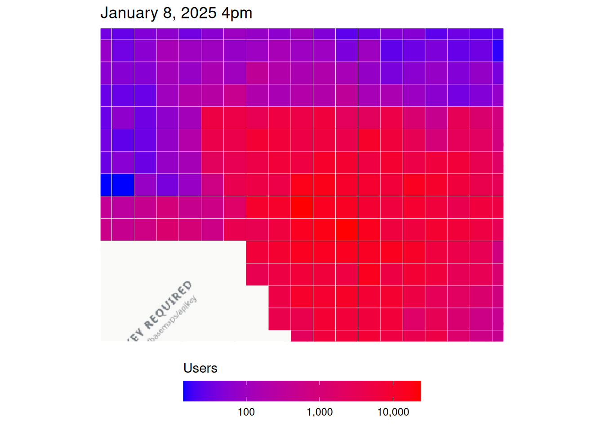
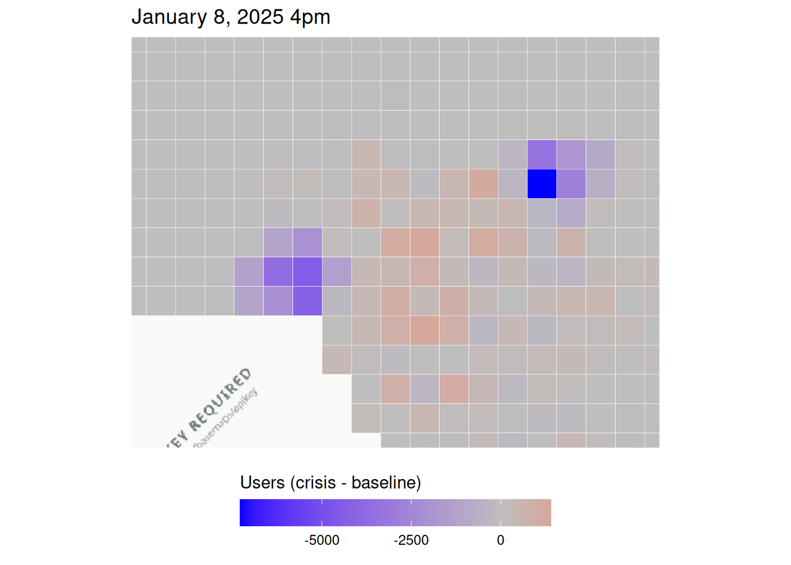
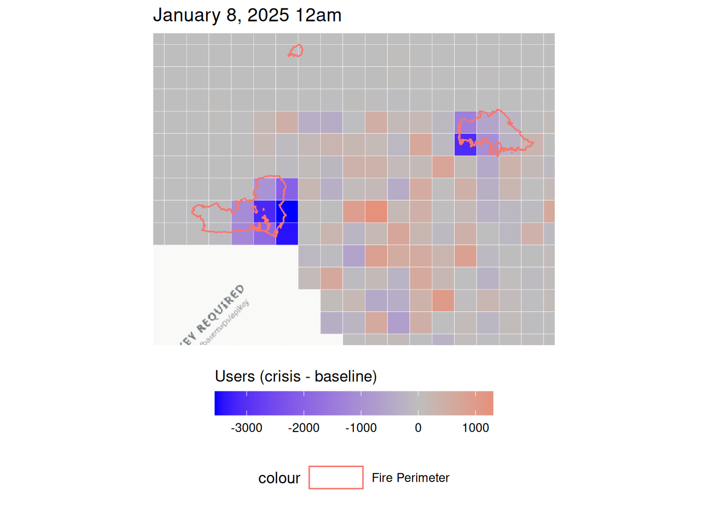
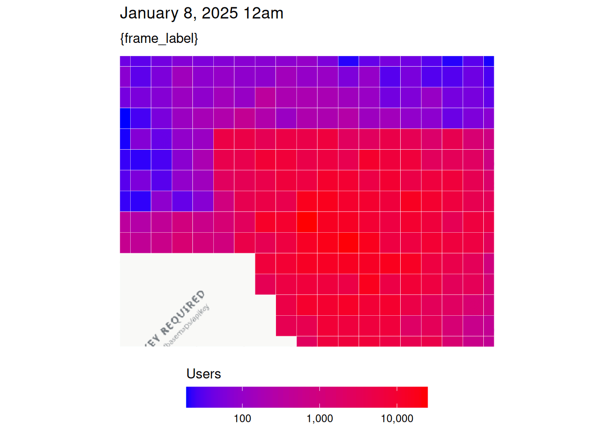
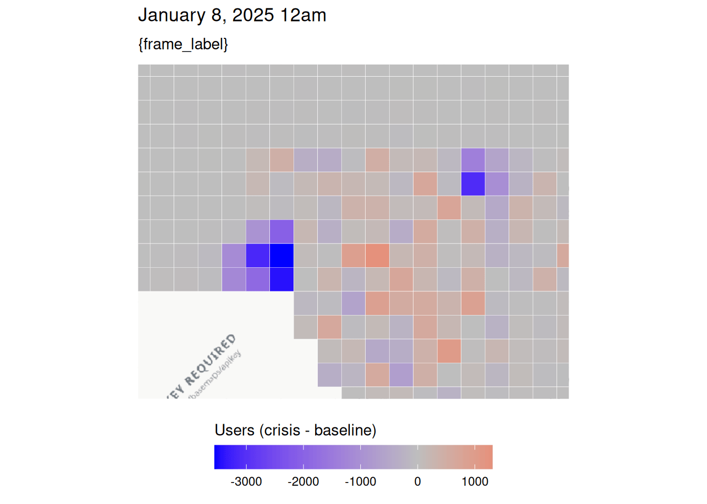

library(disasterMaps)
disaster <- "fire" # "fire" or "earthquake" (synthetic data shipped with the package)
tzone <- c(fire = "America/Los_Angeles",
earthquake = "Europe/Istanbul")[[disaster]] # ENTER TIMEZONE HERE
pop_dir <- system.file("extdata", disaster, "population", package = "disasterMaps")
move_dir <- system.file("extdata", disaster, "movement", package = "disasterMaps")
fb_data_bing <- aggregate_csvs(pop_dir)
tiles_3857 <- build_tiles(fb_data_bing, re_run = TRUE, cache_dir = tempdir())
w <- compute_windows(fb_data_bing, tzone)
attach(w)
mp_data_bing <- aggregate_csvs(move_dir)
moved <- build_moved(mp_data_bing, re_run = TRUE, cache_dir = tempdir())
lon_limits <- range(fb_data_bing$longitude)
lat_limits <- range(fb_data_bing$latitude)
zoom <- fit_zoom(lon_limits, lat_limits, zoom = 10)
# OpenStreetMap roads drawn on top: "none", "major", "secondary" or "all"
highway_detail <- "major"Exploratory Data Analysis (Disaster-Agnostic)
Instructions
Make sure you set tzone in the code chunk below to the relevant timezone. Then, you can run this file to get rough population and displacement plots for the first and last timepoints.
Data Cleaning + Loading
First Timestamp
Population Map
population_plot_n_crisis(plot_ds = w[["first_ds"]],
plot_hour = w[["first_hour"]],
lon_limits = lon_limits,
lat_limits = lat_limits,
zoom = zoom,
tzone = tzone,
highway_detail = highway_detail
)Waiting 14.999694108963 secondsWarning in value[[3L]](cond): Could not download highway data from
OpenStreetMap: HTTP 502 Bad Gateway.
Displacement Map
population_plot_n_difference(plot_ds = w[["first_ds"]],
plot_hour = w[["first_hour"]],
lon_limits = lon_limits,
lat_limits = lat_limits,
zoom = zoom,
tzone = tzone,
highway_detail = highway_detail
)Waiting 14.9997725486755 secondsWarning in value[[3L]](cond): Could not download highway data from
OpenStreetMap: HTTP 502 Bad Gateway.
Last Timestamp
Population Map
population_plot_n_crisis(plot_ds = w[["latest_ds"]],
plot_hour = w[["latest_hour"]],
lon_limits = lon_limits,
lat_limits = lat_limits,
zoom = zoom,
tzone = tzone,
highway_detail = highway_detail
)Waiting 14.999785900116 secondsWarning in value[[3L]](cond): Could not download highway data from
OpenStreetMap: HTTP 502 Bad Gateway.
Displacement
population_plot_n_difference(plot_ds = w[["latest_ds"]],
plot_hour = w[["latest_hour"]],
lon_limits = lon_limits,
lat_limits = lat_limits,
zoom = zoom,
tzone = tzone,
highway_detail = highway_detail
)Waiting 14.9997680187225 secondsWarning in value[[3L]](cond): Could not download highway data from
OpenStreetMap: HTTP 502 Bad Gateway.
Disaster-Specific
Earthquakes
# start and end dates for earthquakes, which can be adjusted
start_date <- as.Date(w[["first_ds"]]) - 1
end_date <- as.Date(w[["latest_ds"]]) + 1
min_magnitude <- 6
# if you want shared legends, use disaster_limits()!!
population_plot_n_difference(plot_ds = w[["first_ds"]],
plot_hour = w[["first_hour"]],
lon_limits = lon_limits,
lat_limits = lat_limits,
zoom = zoom,
tzone = tzone,
highway_detail = highway_detail,
disaster_type = "earthquake",
start_date = start_date,
end_date = end_date,
min_magnitude = min_magnitude
)Fires
# start and end dates for fires, which can be adjusted
start_date <- as.Date(w[["first_ds"]]) - 7
end_date <- as.Date(w[["latest_ds"]]) + 1
population_plot_n_difference(plot_ds = w[["first_ds"]],
plot_hour = w[["first_hour"]],
lon_limits = lon_limits,
lat_limits = lat_limits,
zoom = zoom,
tzone = tzone,
highway_detail = highway_detail,
disaster_type = "fire",
start_date = start_date,
end_date = end_date
)Waiting 14.99977850914 secondsWarning in value[[3L]](cond): Could not download highway data from
OpenStreetMap: HTTP 502 Bad Gateway.Downloading wildfire perimeters from WFIGS...Dates: 2025-01-01 to 2025-01-09Longitude: -118.762207 to -117.971191Latitude: 33.85217 to 34.361576Downloaded 4 fire perimeter(s).
Animations
Population Animation
crisis_animation <- population_plot_animate(
metric = "crisis",
tzone = tzone,
lon_limits = lon_limits,
lat_limits = lat_limits,
zoom = zoom,
fps = 1
)`nframes` and `fps` adjusted to match transition
crisis_animation
Population Animation
difference_animation <- population_plot_animate(
metric = "difference",
tzone = tzone,
lon_limits = lon_limits,
lat_limits = lat_limits,
zoom = zoom,
fps = 1
)`nframes` and `fps` adjusted to match transition
difference_animation